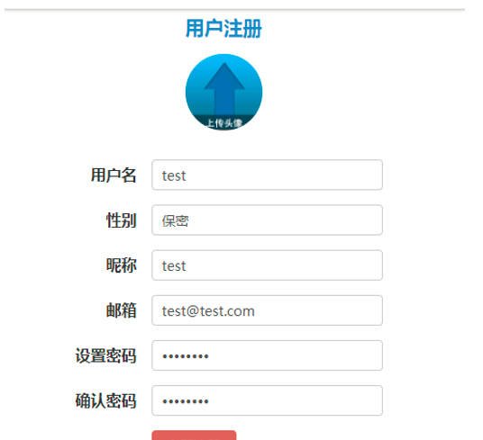
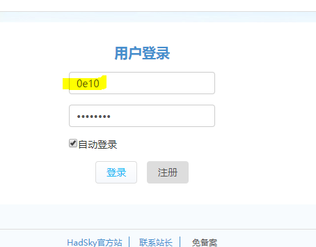
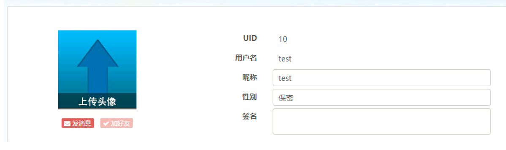

漏洞利用过程
在注册页面
注册用户 密码为password 其他信息随便填

在登陆框以用户名0e10（万能用户名） 密码password登录

成功登陆

漏洞产生原因
该cms有三种登陆方式
用户UID 邮箱 用户名 代码如下
\upload\phpscript\checklogin.php 第6行
1 2 3 4 5 6 7 8 9 10 11 12 13 14 15
| if (Cnum($_POST['username'])) { //UID登录 $__ud = $_G['TABLE']['USER'] -> getData($_POST['username']); $username = $__ud['username']; } elseif (strpos($_POST['username'], '@')) { //邮箱登录 $__ud = $_G['TABLE']['USER'] -> getData(array('email' => $_POST['username'])); $username = $__ud['username'] } else { //用户名登录 preg_match('/^[\x{4e00}-\x{9fa5}A-Za-z0-9_]+$/u', $_POST['username']) ? $username = $_POST['username'] : $username = FALSE; if (strlen($username) > 24 || strlen($username) < 3) { $username = FALSE; } }
|
这里会首先进入Cnum()函数检查
1 2 3 4 5 6 7 8 9 10 11 12 13 14 15 16 17 18
| function Cnum($str, $return = 0, $int = true, $min = FALSE, $max = FALSE) { if (is_numeric($str)) { //0e10在这里进入 if ($int) $str = (int)$str; } else { $str = $return; } if ($min !== FALSE) if ($str < $min) $str = $return; if ($max !== FALSE) if ($str > $max) $str = $return; return $str; //return 0 }
|
这个函数的功能是检验是否位数字,0e10的用户名经过is_numberic()判断returu，最后int()后，以 return 0返回
问题就出在这里 if (Cnum($_POST[‘username’])) 看到返回值是0会认为他不是数字（实际上是的嘛只是科学记数法而已）,于是绕过UID登录方式，0e10显然也不符合邮箱格式，于是进入else被当成了用户名来验证。0e10符合用户名的格式，于是接下来进入用户存在性检验。
\upload\phpscript\checklogin.php 第25行
1 2
| if (!$username || !$password) $chkr = '请填入正确的登录信息';
|
如果开始直接输入0，会在这里报错，但是0e10不会目测PHP弱类型的原因~
\upload\phpscript\checklogin.php 第34行
1 2
| //检验数据库中是否有相应用户名 $trylogindata = $_G['TABLE']['USER'] -> getData(array('username' => $username));
|
跟进getData()
1 2 3 4 5 6 7 8 9
| public function getData($field = NULL, $str = NULL) { /*省略*/ if (Cnum($field, FALSE)) { $sql = "where `id`={$field}"; } else { $sql = $this -> getSql($field, $str); } $query = mysql_query("select * from `{$this->mysql_prefix}{$this->table}` {$sql}"); }/*省略*/
|
跟进getSql()
1 2 3 4 5 6 7 8
| public function getSql($field, $str = NULL) { /*省略*/ } elseif (is_array($field) && $str == NULL) { foreach ($field as $key => $value) { if (Cstr($key, FALSE, TRUE, 1, 255)) $sql .= "`{$key}`=" . mysqlstr($value) . " and ";//无引号保护 } }/*省略*/
|
这里mysqlstr($value)没有引号保护直接拼接进去，最终执行SQL语句如下
1
| select * from `pk_user` where `username`=0e10
|
由于MYSQL的弱类型的关系（0=任何字符串）因为username字段是是字符串，所以只要数据库里有一条数据，那么getData(array('username' => $username));就会返回数据给$trylogindata
\upload\phpscript\checklogin.php 第52行
1 2
| if ($trylogindata) { /*$trylogindata为真则进入用户密码检验*/
|
由于$trylogindata存在，所以进入if语句
\upload\phpscript\checklogin.php 第52行
1 2
| //检验密码是否正确 $userdata = UserLogin(array('username' => $username, 'password' => md5($password)));
|
跟进UserLogin()
1 2 3 4
| function UserLogin($chkuserloginarray, $chkloginqx = true) { global $_G; $userdata = $_G['TABLE']['USER'] -> getData($chkuserloginarray); /**省略**/
|
这里检验用户名，密码依然是getData()函数
最后执行SQL语句就是
1
| select * from `pk_user` where `username`=0e10 and password = 'xxxxxxxxx'
|
所以只要数据库中存在密码，就能登陆拥有相应密码的第一个用户（万能用户名）。
一句话总结一：未加引号保护时，MYSQL+PHP弱类型引起的登陆逻辑漏洞
最后
1、厂商原话：系统开源的，也希望大家多多支持，能把发现的问题发给我
2、个人能力有限，如有错误还请师傅们多多指教